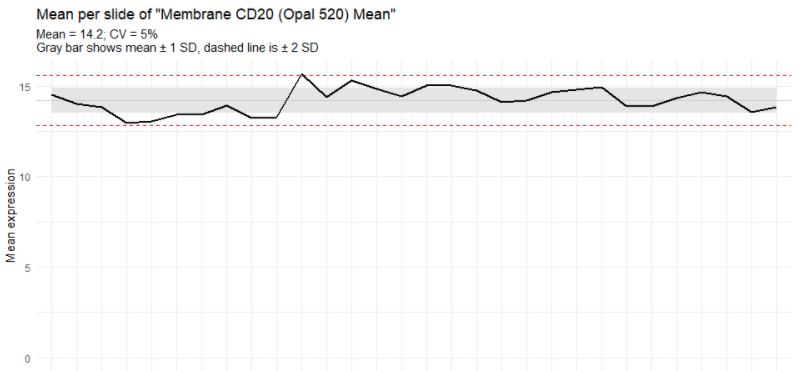
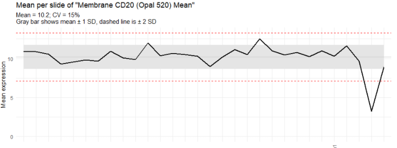

Staining Consistency Report
Kent Johnson
2021-08-17
Source:vignettes/staining_consistency_report.Rmd
staining_consistency_report.RmdThe staining consistency report measures variation in the mean expression of a single marker across multiple images. It is used to assess consistency of staining across staining runs.
Data requirements
The input to this report is a merged cell seg data file from inForm containing data about the samples to measure.
Detailed steps
Select merge file
Click the “Browse” button in the “Select Merge Data” section of the GUI. Use the file selection dialog to select the file containing your merge data.


Guidance
Good result
In general, a good result will have a relatively narrow range of mean values, limited outliers beyond the ±1 SD range, and a CV less than 15%.

Problem indications
A wide range of mean values, outliers far outside the ±1 SD range, or CV greater than 15% may indicate one of several things:
- assay performance (if previously established) is drifting or has drifted
- a new reagent or lot # of reagent placed into service is not performing
- the autostainer needs maintenance
- a run or slide failure has occurred through operator error

This analysis assumes that assay performance has been monitored over time under the same operating conditions, as much as is practicable.